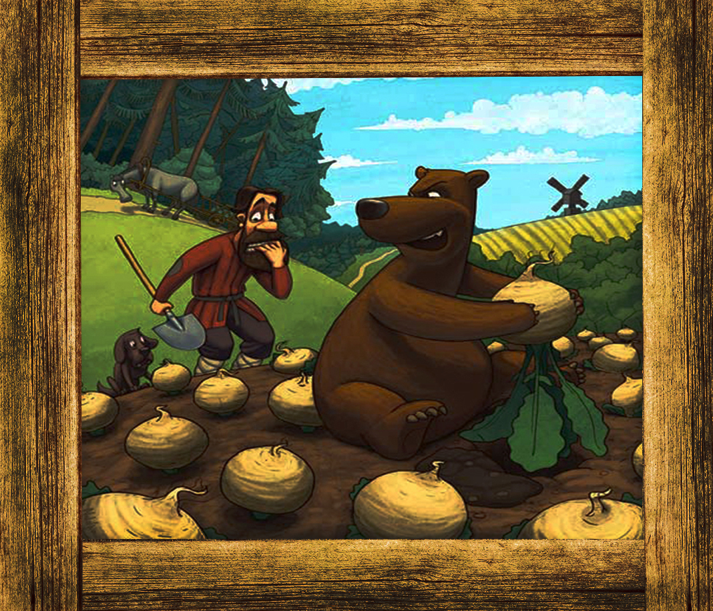

“еори€
ѕриступим к теории ловли медвед€ на казалось бы обыкновенную дачную репу.
ƒавайте сначала разберемс€, что же такое, репа. –епа - однолетнее
или двулетнее трав€нистое растение, вид
рода апуста семейства апустные, или рестоцветные.
ормовые сорта репы называютс€ турнепсом. ќчень часто встречаетс€ в наших кра€х, как в диком, так и в выращиваемом виде.
” редкой хоз€йки на даче не произрастает репа, поэтому именно ее мы и выбрали дл€ ловли медвед€.
»так. ƒавайте непосредственно разберем повадки медвед€, относительно репы.

ак вы уже могли пон€ть, медведи очень люб€т репу, и сразу спешат ее отведать. ќднако стоит помнить,
что во врем€ ее поедани€ они не тер€ют своего внимани€ и бдительности.
„то же представл€ет из себ€ ловушка? ј она представл€ет из себ€ ни что иное, как репу с петлей. орнеплод стоит положить на рассто€нии 25 см от петли. ѕетлю стоит спр€тать
в траву и спр€татьс€ самому.
Ёта нехитра€ конструкци€ поможет вам застать врасплох голодного косолапого.
Theory
Let's proceed to the theory of catching a bear on a seemingly ordinary country dacha.
Let's first figure out what it is, turnip. Turnip - an annual or biennial herbaceous plant, a species of the genus Cabbage of the Cabbage family, or crucifers.
The forage varieties of turnip are called turnips. Very often found in our region, both in wild and in cultivated form. At the rare mistress in a summer residence the turnip does not grow, therefore it we chose for catching a bear.
Now. Let's analyze the habits of the bear directly, with respect to turnips.
As you could already understand, bears are very fond of turnips, and immediately rush to try it. However, it is worth remembering that during their eating they do not lose their attention and vigilance. What is a trap? And it is nothing more than a turnip with a loop. Root should be placed at a distance of 25 cm from the loop. The loop is hidden in the grass and hides itself.
This simple design will help you catch unaware the hungry clubfoot.